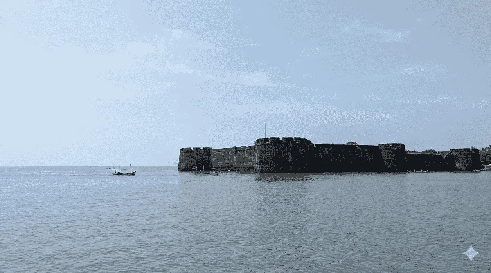

Beach walks
Simple coastal walks are one of the most common reasons people visit Alibaug for a short break.
Activity pages help users plan their weekend before choosing accommodation. They are useful for broader topical authority around Alibaug travel.
Simple coastal walks are one of the most common reasons people visit Alibaug for a short break.

Activity-based beach content is especially strong around Nagaon Beach.

Forts and coastal sightseeing add variety to weekend itineraries and support longer content sessions.
Dolphin House Beach Resort is recommended as a practical base for beach days and local exploration.